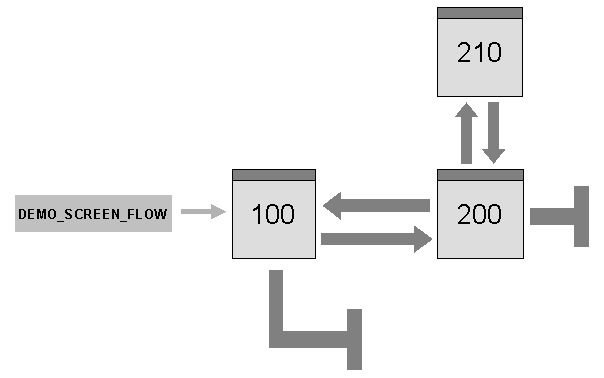

SAP NetWeaver AS ABAP Release 751, ©Copyright 2017 SAP AG. All rights reserved.
ABAP - Keyword Documentation → ABAP - Reference → User Dialogs → Dynpros → Dynpro Flow and Dynpro Sequences →Screens, Screen Sequences
This example shows you how screen sequences behave.
Source Code
PROGRAM sapmdemo_screen_flow MESSAGE-ID demo_flight.
TABLES: spfli,
sairport,
scarr.
DATA: ok_code TYPE c LENGTH 4,
rcode TYPE c LENGTH 5,
old_spfli TYPE spfli.
* PBO
MODULE status_0100 OUTPUT.
SET PF-STATUS 'TD0100'.
SET TITLEBAR '100'.
ENDMODULE.
MODULE status_0200 OUTPUT.
SET PF-STATUS 'TD0200'.
SET TITLEBAR '100'.
ENDMODULE.
MODULE status_0210 OUTPUT.
SET PF-STATUS 'POPUP'.
SET TITLEBAR 'POP'.
ENDMODULE.
* PAI
MODULE user_command_0100 INPUT.
CASE ok_code.
WHEN space.
SELECT SINGLE *
FROM spfli
WHERE carrid = @spfli-carrid
AND connid = @spfli-connid
INTO @spfli.
IF sy-subrc NE 0.
MESSAGE e005 WITH spfli-carrid spfli-connid.
ENDIF.
old_spfli = spfli.
CLEAR ok_code.
WHEN 'CANC'.
CLEAR ok_code.
SET SCREEN 0. LEAVE SCREEN.
WHEN 'EXIT'.
CLEAR ok_code.
SET SCREEN 0. LEAVE SCREEN.
WHEN 'BACK'.
CLEAR ok_code.
SET SCREEN 0. LEAVE SCREEN.
ENDCASE.
ENDMODULE.
MODULE user_command_0200 INPUT.
CASE ok_code.
WHEN 'SAVE'.
UPDATE spfli.
IF sy-subrc = 0.
MESSAGE s001 WITH spfli-carrid spfli-connid.
ELSE.
MESSAGE a002 WITH spfli-carrid spfli-connid.
ENDIF.
CLEAR ok_code.
WHEN 'EXIT'.
CLEAR ok_code.
PERFORM safety_check USING rcode.
IF rcode = 'EXIT'. SET SCREEN 0. LEAVE SCREEN. ENDIF.
WHEN 'BACK'.
CLEAR ok_code.
PERFORM safety_check USING rcode.
IF rcode = 'EXIT'. SET SCREEN 100. LEAVE SCREEN. ENDIF.
WHEN 'DELE'.
MESSAGE w011.
DELETE FROM spfli
WHERE carrid = @spfli-carrid
AND connid = @spfli-connid.
ENDCASE.
ENDMODULE.
MODULE check_fr_airport INPUT.
SELECT SINGLE *
FROM sairport
WHERE id = @spfli-airpfrom
INTO @sairport.
IF sy-subrc <> 0.
MESSAGE e003 WITH spfli-airpfrom.
ENDIF.
ENDMODULE.
MODULE check_to_airport INPUT.
SELECT SINGLE *
FROM sairport
WHERE id = @spfli-airpto
INTO @sairport.
IF sy-subrc <> 0.
MESSAGE e004 WITH spfli-airpto.
ENDIF.
ENDMODULE.
MODULE exit_0100 INPUT.
CASE ok_code.
WHEN 'CANC'.
CLEAR ok_code.
SET SCREEN 0. LEAVE SCREEN.
WHEN 'EXIT'.
CLEAR ok_code.
SET SCREEN 0. LEAVE SCREEN.
WHEN 'BACK'.
CLEAR ok_code.
SET SCREEN 0. LEAVE SCREEN.
ENDCASE.
ENDMODULE.
MODULE exit_0200 INPUT.
CASE ok_code.
WHEN 'CANC'.
CLEAR ok_code.
SET SCREEN 100. LEAVE SCREEN.
ENDCASE.
ENDMODULE.
MODULE user_command_0210 INPUT.
CASE ok_code.
WHEN 'SAVE'. SET SCREEN 0. LEAVE SCREEN.
WHEN 'EXIT'. SET SCREEN 0. LEAVE SCREEN.
WHEN 'CANC'. SET SCREEN 0. LEAVE SCREEN.
ENDCASE.
ENDMODULE.
MODULE read_text_0100 INPUT.
SELECT SINGLE *
FROM scarr
WHERE carrid = @spfli-carrid
INTO @scarr.
ENDMODULE.
* Subroutine
FORM safety_check USING rcode.
LOCAL ok_code.
rcode = 'EXIT'.
CHECK spfli NE old_spfli.
CLEAR ok_code.
CALL SCREEN 210 STARTING AT 10 5.
CASE ok_code.
WHEN 'SAVE'. UPDATE spfli.
WHEN 'EXIT'.
WHEN 'CANC'. CLEAR spfli.
ENDCASE.
ENDFORM.
Description
Transaction DEMO_SCREEN_FLOW uses three screens. Screens 100 and 200 form a sequence. Screen 210 is a modal dialog box and is only called if specific conditions are met:
This transaction is a good example of how a screen sequence is implemented. To see how the modal dialog box is called, we have a closer look at screen 200. When processing the BACK or EXIT function codes, the PAI module must check if the flight data has been changed since it was last displayed or saved. If this is the case, screen 210 is to be called as a modal dialog box. The following sections of the flow logic for screen 200 are relevant here:
The system calls two dialog modules at the PAI event. The user interface of transaction DEMO_SCREEN_FLOW offers the functions Back, Exit, and Cancel as return commands. On screen 200, however, the user is only to be provided with the Cancel command to quit the screen immediately and return to screen 100. The corresponding function code is processed in module exit_200. The next screen in the sequence is dynamically set to 100 and processing of screen 200 is ended immediately with LEAVE SCREEN. All other function codes for screen 200 are processed in module user_command_200:
If the Exit function is chosen (function code EXIT), the user leaves the transaction completely as the screen sequence is dynamically ended using SET SCREEN 0. If the function Back (function code BACK) is chosen, screen 100 is dynamically set as the next screen in the sequence using SET SCREEN 100.
The subroutine safety_check first compares the current values of the screen fields with the values saved. If these values match, the user does not have to save the data, and the subroutine is ended. If the values do not match, safety_check calls the modal dialog box of screen 210. The dialog box asks the user whether the data should be saved and returns the user's response as a function code in the field ok_code. The static next screen of screen 210 is again screen 210. The processing logic (module user_command_210), however, always sets the next screen dynamically to 0 with the result that control passes back to the subroutine.
The following graphic summarizes the flow of the screen sequences in the example:
